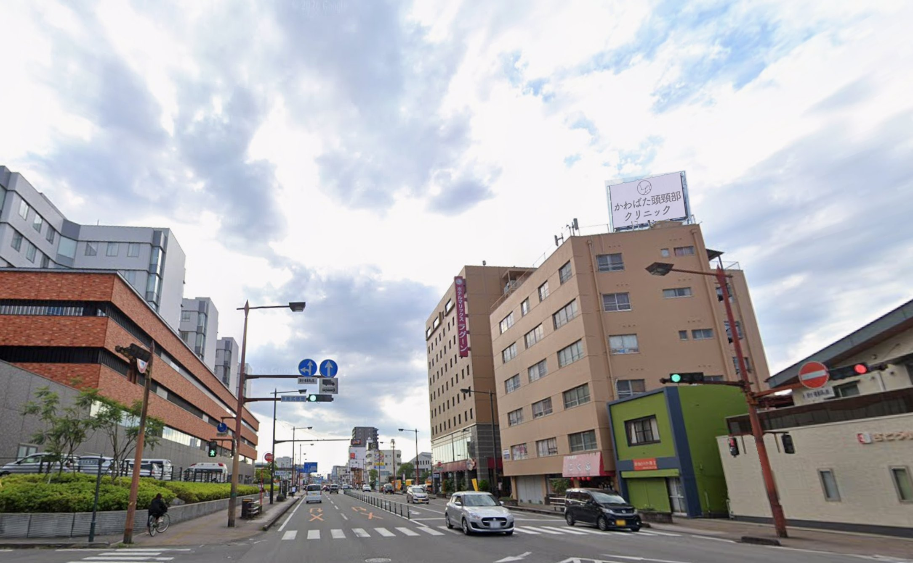

宮崎市中心部・県病院前。
約5m×3mの大型LEDビジョンで、地域に届ける動画広告。
WEBやSNSの中だけではなく、宮崎の街を行き交う人へ。
通勤、営業、買い物、送迎など、日々の生活導線の中で、企業・店舗・サービスの情報を繰り返し発信します。
新しく広告を始めたい企業様も、現在の広告を見直したい企業様も。
宮崎での新しい情報発信に、大型デジタルサイネージという選択肢を。
広告との接点は、オンラインだけではありません。
広告市場のデジタル化は、さらに進んでいます。
広告は、WEBへ。
そして、動画へ。
その一方で、街の中で広告と出会う「リアルな接点」の価値も続いています。
オンラインで届ける広告。
街の中で出会う広告。
大型デジタルサイネージは、デジタルの「動画」と、屋外広告の「リアルな接点」を組み合わせた広告媒体です。
WEBやSNSだけに広告接点を限定するのではなく、日常の移動の中にも企業との接点をつくる。
広告の届け方を、宮崎の街へ広げます。
出典：電通「2025年 日本の広告費」／「2025年 日本の広告費 インターネット広告媒体費 詳細分析」
宮崎市中心部。
国道10号沿い・宮崎県立宮崎病院前。
大型デジタルサイネージが設置されているのは、
宮崎県宮崎市清水3丁目1 金丸ビル屋上。
宮崎県立宮崎病院前、国道10号沿いに位置しています。
サイネージは、宮崎駅方面から西へ向かう車両から視認できる方向に設置。
周辺には医療施設をはじめ、事業所、店舗、住宅などがあり、通勤や業務、通院、買い物など、さまざまな目的で人や車が行き交います。
広告のためにつくられた動線ではなく、
毎日の生活の中にある動線。
日常的に利用される道路沿いだからこそ、企業や店舗の情報と自然に接触する機会をつくります。
さまざまな人が行き交う、宮崎市中心部の生活導線。
屋外広告の特徴は、特定のWEBサイトやSNSを利用している人だけを対象としないことです。
年齢や性別を限定するのではなく、地域の生活導線そのものを広告との接点として活用できます。
サイネージが面する方向だけでも、1日約1.3万台。
宮崎県立宮崎病院前、国道10号沿い。
サイネージが面する宮崎駅方面から西へ向かう車線では、
の自動車交通量が確認されています。
日常的に多くの車が行き交う道路だからこそ、
「移動する時間」を、広告との接点へ。
通勤の途中に見る。
仕事の移動中に見る。
買い物へ向かう途中に見る。
送迎の途中に見る。
同じ場所を利用するたびに、企業名や店舗名、商品・サービスとの接点が生まれます。
WEB・SNS ＋ 街での接触。
オンラインだけではつくれない地域との接点を、屋外広告で補完します。
大型デジタルサイネージが持つ3つの媒体価値。
W4,800mm × H2,880mm。
約5m×3mの大型LED画面。
企業名、商品、サービス、店舗情報などを、大型画面ならではのスケールで発信します。
静止した屋外看板とは異なり、動画による表現が可能です。
商品、料理、店舗、施設、サービス、企業メッセージなど、静止画だけでは伝えにくい情報も、映像の動きを使って表現できます。
1枠15秒の広告を、1日140回以上放映。
月間では4,300回以上。
一度だけではなく、継続して情報を発信します。
大型 × 動画 × 反復。
この3つの特徴を組み合わせて、地域での認知機会をつくります。
道路の先から視界に入る、約5m×3mのLEDビジョン。
屋外広告では、「どこにあるか」と同時に、「どのように見えるか」も重要です。
当サイネージは、金丸ビル屋上に設置した、
W4,800mm × H2,880mmの大型LEDビジョン。
現地で確認すると、直下の交差点だけではなく、約120m離れた地点からも表示面を確認できます。
大型画面に加えて、LED自体が発光するため、昼間から夜間まで広告を表示。
さらに動画による画面の変化や動きを使って、街の中で情報を発信します。
大型画面。
LED表示。
動画による動き。
現地資料：A地点＝直下の交差点、B地点＝約120m。
広告は、一度見られて終わりではありません。
朝6時から24時まで、1日を通して広告をローテーション放映しています。
企業名。店舗名。商品名。サービス名。
繰り返し目にする機会をつくることで、
「知らない」から、
「見たことがある」へ。
地域での認知形成をサポートします。
※1枠15秒の場合。放映状況等により変動する場合があります。
現在25社・26本の広告を放映しています。
そのほか、
など、さまざまな情報発信に活用できます。
今の広告、本当に届けたい人へ届いていますか？
それぞれの広告には、それぞれ異なる強みがあります。
大型デジタルサイネージは、それらをすべて置き換えるための媒体ではありません。
大切なのは、
「誰に、どこで、どう届けるか」
新しく広告を始める企業にも。
現在の広告を見直したい企業にも。
大型デジタルサイネージは、地域での広告接点を増やすひとつの選択肢です。
「変えられる屋外広告」だから、年間を通して使える。
デジタルサイネージなら、掲載期間中でも広告データを変更できます。
その時に「伝えたいこと」へ変更できます。
簡単な画像変更や編集にも対応します。
1年間ずっと同じ広告を流すのではなく、年間の販促計画に合わせて広告枠を活用できます。
※新規撮影や新たな動画制作など、内容によって別途費用が必要となる場合があります。
動画広告を始めるために、最初から動画を用意する必要はありません。
そんな企業様にも対応します。
企業ロゴ、写真、文字情報などの素材をご用意いただければ、簡単なスライド形式などの広告動画を無料で制作します。
というシンプルな広告から始めることもできます。
新規撮影や本格的な動画制作をご希望の場合にも対応可能です。
※撮影・制作内容により別途お見積りとなります。
それぞれの情報を約15秒の動画として、大型LEDビジョンに放映します。
15秒だからこそ、
「何を伝えるか」をシンプルに。
伝えたい情報を整理し、大型画面で見たときに伝わる広告として発信します。
地域の情報を、地域の人へ。
現在は企業・店舗等の広告を中心に放映しています。
そして将来的には、広告だけにとどまらず、
地域イベント。
観光情報。
地域のお知らせ。
必要に応じた防災・公共情報。
など、宮崎に暮らす人、働く人、訪れる人に役立つ地域情報の発信にも活用できる媒体を目指しています。
企業と地域をつなぐ、
新しい情報発信拠点へ。
地域の企業や店舗の情報とともに、宮崎のさまざまな情報を届ける。
単なる広告媒体ではなく、地域に根ざしたメディアへ。
大型デジタルサイネージの可能性を広げていきます。
※地域・観光・防災・公共情報等への活用は今後の展望です。
掲載して終わりではありません。
屋外デジタルサイネージは、継続して安定した広告放映を行うことが重要です。
そのため、広告掲載だけではなく、媒体そのものの運用・管理も行っています。
毎日広告を発信する地域媒体として、日々の運用・管理を行っています。
はい。写真や企業ロゴ、掲載したい文字情報などをご提供いただければ、簡単なスライド形式等の広告動画を無料で制作できます。
基本は1枠15秒です。2枠以上の掲載についてもご相談いただけます。
1枠の場合、1日140回以上、月4,300回以上を目安に放映しています。
はい。差替え用データをご用意いただければ、契約期間中の差替え回数に制限はなく、原則無料で対応します。簡単な画像変更や編集についてもご相談いただけます。
可能です。キャンペーン、新商品、イベント、求人など、時期に合わせて広告内容を変更できます。
初期費用はありません。
簡単なスライド形式などの動画制作は無料で対応しています。新規撮影や本格的な動画制作が必要な場合は、内容に応じて別途お見積りとなります。
音声は使用していません。映像と文字を中心とした広告となります。
WEBの中だけではなく、
宮崎の街へ。
企業を知ってもらいたい。
店舗を知ってもらいたい。
商品やサービスを知ってもらいたい。
イベントに来てもらいたい。
人を採用したい。
その情報を、宮崎の街で毎日繰り返し発信する。
新しい広告をご検討の方も、現在の広告を見直したい方も。
まずはお気軽にご相談ください。